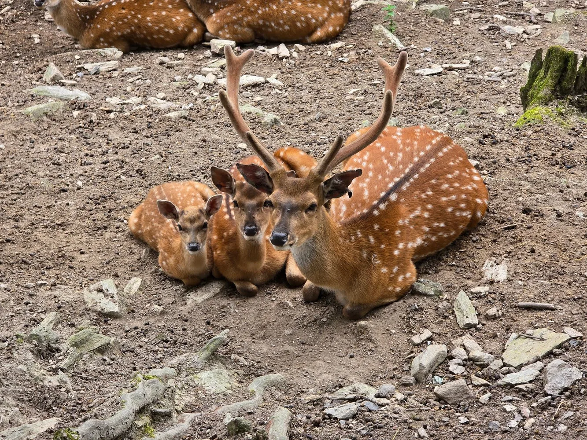

Marcelle Natureza
Parque de animales en semilibertad a orillas del Miño, a pocos minutos de la ciudad de Lugo. El recorrido se hace a pie por amplios recintos con especies de varios continentes, muchas de ellas llegadas de rescates, y hay visitas guiadas y zona de restauración dentro del recinto. Es un plan de mañana o tarde completa que funciona bien con niños de cualquier edad.
Marcelle, 6, San Martín de Guillar, 27154 Outeiro de Rei, Lugo Visitar web oficial